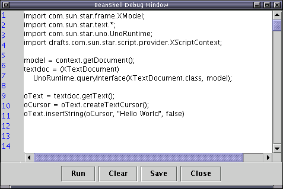
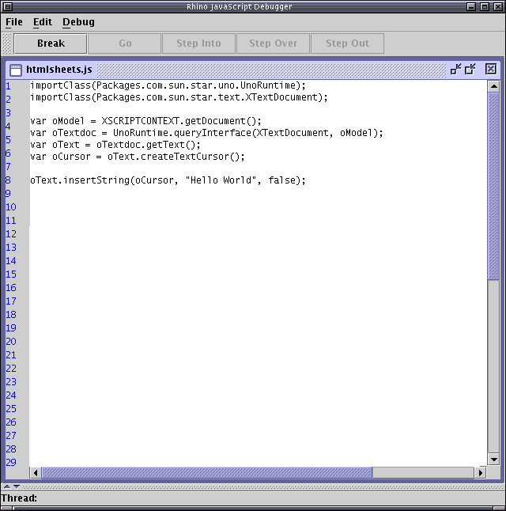

Writing Scripts in BeanShell, JavaScript and Java
Contents
Hello World in BeanShell
Here's a BeanShell script that inserts Hello World at the start of an OpenOffice.org Writer document:
import com.sun.star.frame.XModel;
import com.sun.star.text.*;
import com.sun.star.uno.UnoRuntime;
import drafts.com.sun.star.script.provider.XScriptContext;
model = context.getDocument();
textdoc = (XTextDocument)
UnoRuntime.queryInterface(XTextDocument.class, model);
oText = textdoc.getText();
oCursor = oText.createTextCursor();
oText.insertString(oCursor, "Hello World", false)
Top
Trying out your BeanShell script
Trying out your Hello World BeanShell script is easy:- Start OpenOffice.org and open a new Writer document.
- Select the Tools/Configure... menu item.
- Select the menu tab. In the Category section select OpenOffice.org Scripts/share/Java/selector
- In the Function list select ScriptSelector.showOrganizer
- Now click the New button to create a menu item for this script. You can rename the menu item by clicking on it in the Menu entries list, and move it around the menu hierarchy using the arrow buttons.
- Click OK to apply your change
- Select your new menu item
- A Script dialog appears, browse to a BeanShell script eg. Root/share/BeanShell/Highlight/highlighter.bsh and click Edit.
- A BeanShell Debugger window will appear. Click Clear to clear the window
and copy in the text of your Hello World example

- Now click on the Run button.
- You should see Hello World appear at the start of the Writer document.
- Click Close so that the highlighter.bsh script is not overwritten
If you are new to the OpenOffice.org API this is a great way to experiment with it.
When you are happy with your BeanShell script, you can create a Script Parcel which can be deployed to OpenOffice.org installations or documents for use by others. This can be done using NetBeans or from the command line.
Top
Hello World in JavaScript
Here's a JavaScript script that inserts Hello World at the start of
an OpenOffice.org Writer document:
importClass(Packages.com.sun.star.uno.UnoRuntime);
importClass(Packages.com.sun.star.text.XTextDocument);
var oModel = XSCRIPTCONTEXT.getDocument();
var oTextdoc = UnoRuntime.queryInterface(XTextDocument, oModel);
var oText = oTextdoc.getText();
var oCursor = oText.createTextCursor();
oText.insertString(oCursor, "Hello World", false);
The XSCRIPTCONTEXT variable above is a global instance of the XScriptContext type which is available to all JavaScript scripts executed by the Scripting Framework. See Writing OpenOffice.org Scripts and the XScriptContext type for the methods available for the XScriptContext type.
Trying out a JavaScript script in OpenOffice.org
Once again you can use the Edit/Debug Scripts dialog to open a JavaScript script in an editor. The Rhino JavaScript Editor from the Mozilla Rhino project can be used to debug and test your JavaScript scripts.- Create a menu item for the Script dialog as described in the BeanShell instructions above
- Open the Script dialog, navigate to Root/share/JavaScript/ExportSheetsToHTML/exportsheetstohtml.hs and click edit.
- A Rhino Debugger window will appear. Delete the text in the window and
paste in the Hello World code

- To run the script select File/Run and then click on the Go button.
The Rhino Debugger also includes debugging functionality, so you can set breakpoints in your JavaScript script and step through the code as it is executed.
Hello World in Java
Here's the Hello World script in Java:
import com.sun.star.frame.XModel;
import com.sun.star.text.*;
import com.sun.star.uno.UnoRuntime;
import drafts.com.sun.star.script.provider.XScriptContext;
public class MyClass {
// The script method must be public
// It can either be static or non-static
public void showForm(XScriptContext xSc) {
// getting the text document object
XModel xmodel = xSc.getDocument();
XTextDocument xtextdoc = (XTextDocument)
UnoRuntime.queryInterface(XTextDocument.class, xmodel);
XText xtext = xtextdoc.getText();
XTextCursor xtextcursor = xtext.createTextCursor();
xtext.insertString(xtextcursor, "Hello World", false);
}
}
OpenOffice.org scripts in Java need to be compiled in order to execute them. See the Developing Scripts in NetBeans and Developing Scripts on the command line guides for instructions on how to compile and deploy OpenOffice.org scripts in Java.
Writing OpenOffice.org scripts and the XScriptContext type
The XScriptContext type is used to obtain the the document context, desktop and component factory from an OpenOffice.org script. Any public Java method which accepts XScriptContext as it's first parameter can be executed as an OpenOffice.org script. For BeanShell scripts, an instance of XScriptContext is available in a global variable called "context" which can be used by the script.The following accessor methods are available on the XScriptContext type:
- Current document - access the document context against which the
script was invoked
<XScriptContext Instance>.getDocument()
returns ::com::sun::star::frame::XModel - OpenOffice.org Desktop - access the desktop of the running OpenOffice.org
<XScriptContext Instance>.getDesktop()
returns ::com::sun::star::frame::XDesktop - Component Factory - access a ComponentContext factory to create
other UNO components as required
<XScriptContext Instance>.getComponentContext()
returns ::com::sun::star::uno::XComponentContext
import drafts.com.sun.star.script.provider.XScriptContext;
Tips on writing OpenOffice.org scripts
-
Performance: Currently scripts are being loaded by the Scripting Framework each time they are run. As such it is important to keep the size of your scripts and any dependent jar files they are using reasonably small. In future releases this script loading will be optimised by changing the point at which the scripts are loaded by OpenOffice.org and using various caching schemes once they are loaded. However, the initial load will always be effected by the script and it's dependent jar/class file sizes.
-
Threading: Scripts are run synchronously by the Scripting Framework. If you wish to perform any background task or provide some user interaction via a dialog for instance, then it is your responsibility to spawn a thread in the running script which can manage this process or interaction and let the script return promptly. Within this running thread you should follow the normal UNO component threading guidelines to ensure that they do not deadlock OpenOffice.org through inappropriate use of the UNO API.
Parcel Descriptor DTD and sample XML
Each Script Parcel must contain a parcel-descriptor.xml file which provides all the necessary metadata for the script. The DTD for the parcel-descriptor.xml follows:<?xml version="1.0" encoding="UTF-8"?> <!-- DTD for Parcel Meta data for use in the OpenOffice.org Scripting Framework Project --> <!ELEMENT description (#PCDATA)> <!ELEMENT displayname EMPTY> <!ELEMENT functionname EMPTY> <!ELEMENT prop EMPTY> <!ELEMENT languagedepprops (prop+)> <!ELEMENT script (description, displayname, functionname, languagedepprops*)> <!ELEMENT parcel (script+)> <!ATTLIST displayname value CDATA #REQUIRED > <!ATTLIST locale lang CDATA #REQUIRED > <!ATTLIST functionname value CDATA #REQUIRED > <!ATTLIST prop name CDATA #REQUIRED value CDATA #REQUIRED > <!ATTLIST script language CDATA #REQUIRED > <!ATTLIST parcel language CDATA #REQUIRED >
The following is an example of a parcel-descriptor.xml file that defines a script, implemented in Java. The languagedepprops element is used to extend the JVM's classpath.
<?xml version="1.0" encoding="UTF-8"?> <!--Sample Meta Data for use with the Scripting Framework Project in OpenOffice.org --> <!DOCTYPE parcel SYSTEM "parcel.dtd"> <parcel language="Java"> <script language="Java"> <displayname value="Memory.usage"/> <description> Displays the memory current memory usage </description> <functionname value="memoryUtils.memoryUsage"/> <languagedepprops> <prop name="classpath" value="/opt/foo.jar:/usr/java/src.jar"/> </languagedepprops> </script> </parcel>Top
Last Modified: Nov 28 2003